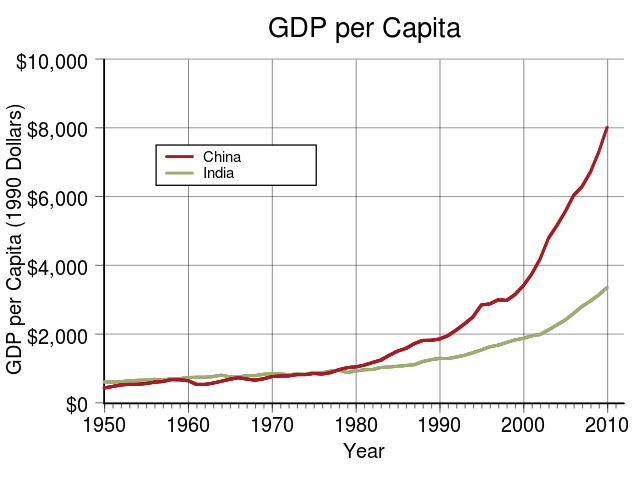

'People' refers to those most likely to visit this site. Those who have the technology and the free time to be interested in such a topic. Which is to say the 'machine operators' or the WENAO (Western Europe North America Oceania + Japan) middle class.
People correctly understand that there are wealthy and poor counties. The key misunderstanding is the reasons for this difference and the relationship between the poor and wealthy countries.
So what do 'people' think?
These beliefs are exagerated but not invalid. Still they miss the key reason for the existence and continuation of poor and rich countries. Why?
The core misunderstanding is that the most important difference is the countries internal makeup. There is the implication that if the poor countries could replicate the political systems of the wealthy countries they could be similarly successful.
Through capitalism becoming globally dominant and the advance of globalization the factor that determines if your country is rich or poor is where it fits into the global system. Or more to the point it is where the corporations in your country rank on the global scale.
Through globalization businesses now compete at a global level. You could apply a progressive democracy to a poor country but due to economies of scale and technological advantage there is no way that local business in those countries can compete with the likes of Apple, Google or Microsoft. They often can't even compete in terms of food production despite the advantage of being local and having cheaper distribution costs.
Regardless of their political makeup, they need to make money in the global system. What do they have? They have a large number of poorly educated poor people who need work and can work cheaply. Their only real option is to facilitate these people being employed by foreign companies for low wages.
The poor countries are doubly unable to improve their position in the global system as the wealthy countries actively work to suppress their advancement.
There is a long string of trade agreements that favor the already wealthy countries (and their corporations). The poor countries are excluded and thus are further disadvantaged.
Primarily this is the USA (and it's closest allies) influencing the poor countries to avoid leadership that may put up barriers to globalization. Often the supported regimes are highly undemocractic or corrupt. This includes support for regime changes which can be greatly destructive for the people of the country.
What is true is that these poor countries are more corrupt than the rich countries. They are further unable to improve their global standing due to corporations conducting lobbying to influence these countries to their own benefit usually at the expense of the countries people.
It is estimated that 4 earths worth of production would be required if everyone consumed as many resources as those in the US. The poor countries cannot all raise their own status and become rich countries, because the current global system is designed to function with a large number of poor people who consume little but produce a lot for low pay.
For everyone in the world to live like the WENAO middle class there would have to be a very different system where most of the wealth in the world doesn't go to the top 1%.
Hasn't china managed to raise it's wealth within the global system? Doesn't that prove that the poor countries are limited by their political systems?

China is an interesting example. It has managed to significantly expand it's economy since the 1950s. Has China moved from being a supplier of precariat to a new reservoir of global elite?
No, rather China as a country has focused on being an extremely effective as gatekeepers. This is the government and business working in concert to provide great value offerings to global corporations.
This was achieved not through democracy, but rather selectively embracing capitalism when it worked to the countries benefit, part of which is ignore international patent law.
China's success has not done a huge amount for their precariat, with the large majority of the wealth going to the top (subscription required to read..).